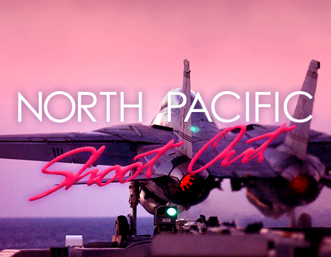

Original Concept By: Mike Mykytyn
Date: September 9th 1989
Location: North Pacific Ocean
Playable Sides: United States / Soviet Union
Duration: 6 Hours
The geography and positioning of Soviet and American forces in the North Pacific at the height of the Cold War always presented the danger of open confrontation. This was compounded by the not so subtle cat and mouse games played with military forces to keep the action at the negotiating table constantly in motion.